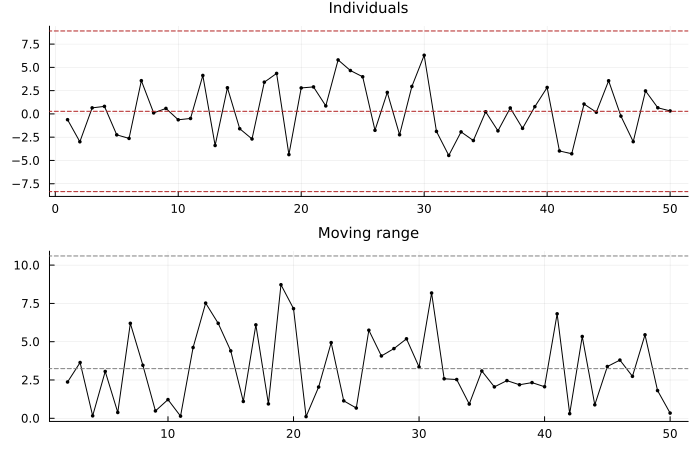
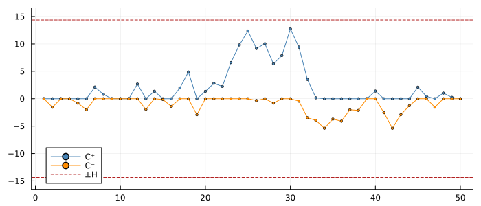
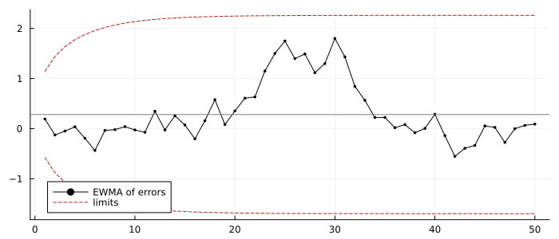
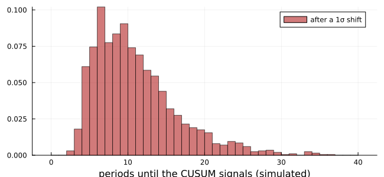
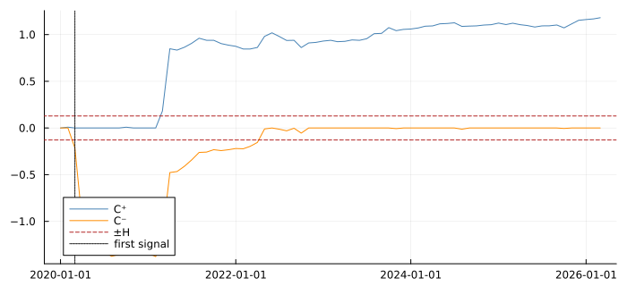
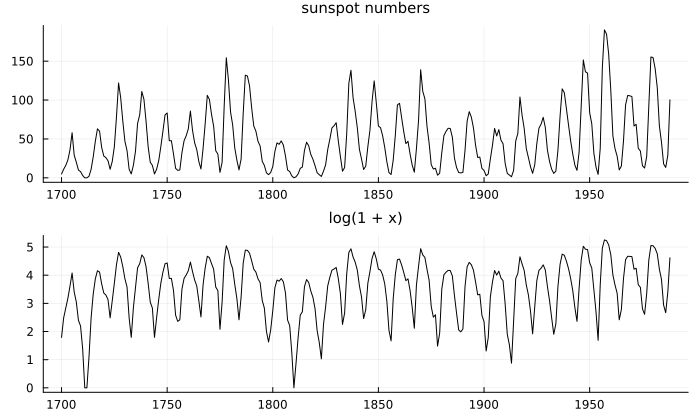

Watching a Model Drift
using TSAnalytics, Plots, DelimitedFiles, Statistics, Random
using StatsAPI: residuals
e = Float64.(readdlm(TSAnalytics.FORECAST_ERRORS, ',', skipstart = 1)[:, 2])
println(length(e), " one-step-ahead forecast errors; mean ", round(mean(e), digits = 3),
", standard deviation ", round(std(e), digits = 3))50 one-step-ahead forecast errors; mean 0.282, standard deviation 2.828A forecasting model is fitted once and used for months or years. The world it was fitted to does not stay still: a new competitor, a changed regulation, a slow shift in taste. At some point the model stops being right, and the first place that shows is the forecast errors. They stop centring on zero.
Chapter 57 asked whether the parameters changed, with a null hypothesis and a p-value. This chapter asks a different question: has the model stopped working? The answer is a signal with a decision limit, not a test. The distinction matters, and confusing the two is common in applied forecasting. A test looks back over a fixed sample and controls the chance of a false alarm once. A monitor runs indefinitely, and its false alarm rate is a matter of how long, on average, it runs before crying wolf.
Montgomery, Jennings & Kulahci (2008, §2.6.3, printed pp. 60–66, PDF 73–79) bring the tools from statistical process control, where they were built for production lines, and apply them to forecast errors. Their Table 2.3 (printed p. 54) gives 50 errors from a forecasting model, used throughout this chapter.
The individuals chart
The simplest monitor plots each error against limits three standard deviations from the centre. The standard deviation is estimated from the moving range, the absolute difference between successive errors, because that is not inflated by a shift in the mean the way the ordinary standard deviation is:
\[\hat\sigma = 0.8865\, \overline{MR}, \qquad \overline{MR} = \frac{1}{n-1}\sum_{t=2}^{n} |e_t - e_{t-1}|\]
(Montgomery's Eq. 2.48; 0.8865 = 1/1.128, the reciprocal of the mean range of two standard normals).
mr = abs.(diff(e))
σ = 0.8865 * mean(mr)
c = mean(e)
println("MR̄ = ", round(mean(mr), digits = 4), ", σ̂ = ", round(σ, digits = 4),
", limits ", round(c - 3σ, digits = 2), " and ", round(c + 3σ, digits = 2),
"; MR chart upper limit ", round(3.267 * mean(mr), digits = 2))MR̄ = 3.2437, σ̂ = 2.8755, limits -8.34 and 8.91; MR chart upper limit 10.6p1 = plot(e; marker = :circle, markersize = 2, color = :black, label = "", title = "Individuals",
titlefontsize = 10)
hline!(p1, [c - 3σ, c, c + 3σ]; color = [:firebrick :gray :firebrick], linestyle = :dash, label = "")
p2 = plot(2:50, mr; marker = :circle, markersize = 2, color = :black, label = "", title = "Moving range",
titlefontsize = 10)
hline!(p2, [mean(mr), 3.267 * mean(mr)]; color = [:gray :firebrick], linestyle = :dash, label = "")
plot(p1, p2; layout = (2, 1), size = (700, 450))
These are the limits of Montgomery's Figure 2.33 (centre 0.28, limits 8.91 and −8.34; moving-range limit 10.60 about a mean range of 3.24), recomputed from his data. Every error is inside: the model is in control.
The CUSUM
The individuals chart reacts only to large errors. A small persistent bias, every forecast off by half a standard deviation, can run for a long time before any single error crosses three. The cumulative sum (Page 1954) accumulates evidence instead:
\[C^+_t = \max(0,\; e_t - K + C^+_{t-1}), \qquad C^-_t = \min(0,\; e_t + K + C^-_{t-1})\]
(Montgomery's Eq. 2.49, with target zero). K, the reference value, is usually σ/2, so the sums grow only when errors persistently exceed half a standard deviation. A signal is given when either passes H = 5σ.
function cusum(e, K)
hi = zeros(length(e)); lo = zeros(length(e))
for t in eachindex(e)
hi[t] = max(0, e[t] - K + (t > 1 ? hi[t-1] : 0.0))
lo[t] = min(0, e[t] + K + (t > 1 ? lo[t-1] : 0.0))
end
return hi, lo
end
hi, lo = cusum(e, σ / 2)
H = 5σ
println("H = 5σ̂ = ", round(H, digits = 4), "; largest C⁺ ", round(maximum(hi), digits = 2),
", largest |C⁻| ", round(-minimum(lo), digits = 2))H = 5σ̂ = 14.3776; largest C⁺ 12.74, largest |C⁻| 5.38plot([hi lo]; color = [:steelblue :darkorange], marker = :circle, markersize = 2,
label = ["C⁺" "C⁻"], size = (700, 300), ylims = (-1.15H, 1.15H), legend = :bottomleft)
hline!([H, -H]; color = :firebrick, linestyle = :dash, label = "±H")
H is 14.38, as Montgomery's Figure 2.34 shows. His text gives 14.36. The text rounds the mean moving range to 3.24 before multiplying (5 × 0.8865 × 3.24 = 14.36), while the chart uses the unrounded 3.2437. The figure is right. The upper sum rises to about 12.7 around period 30, the run of positive errors visible in the individuals chart, and falls back without signalling. This is an in-control example: it shows the mechanics and detects nothing.
The EWMA
The exponentially weighted moving average of the errors is a second way to accumulate small shifts. Its limits widen from the start towards a steady state:
\[\bar e_t = \lambda e_t + (1-\lambda)\bar e_{t-1}, \qquad \text{limits } T \pm 3\sigma \sqrt{\tfrac{\lambda}{2-\lambda}\big[1 - (1-\lambda)^{2t}\big]}\]
(Eqs. 2.50 and 2.51). Montgomery's Example 2.14 centres the chart on the mean error and uses λ = 0.1:
λ = 0.1
z = zeros(50); zprev = c
for t in 1:50
z[t] = λ * e[t] + (1 - λ) * zprev
global zprev = z[t]
end
w = [3σ * sqrt(λ / (2 - λ) * (1 - (1 - λ)^(2t))) for t in 1:50]
println("steady-state limits ", round(c - 3σ * sqrt(λ / (2 - λ)), digits = 3), " and ",
round(c + 3σ * sqrt(λ / (2 - λ)), digits = 3))steady-state limits -1.697 and 2.261plot(z; marker = :circle, markersize = 2, color = :black, label = "EWMA of errors", size = (700, 300),
legend = :bottomleft)
plot!([c .+ w c .- w]; color = :firebrick, linestyle = :dash, label = ["limits" ""])
hline!([c]; color = :gray, label = "")
The limits of Figure 2.35 (2.261 and −1.697), again recomputed from the data, and again no signal.
How long until a false alarm, and until a real one?
A monitor's quality is measured by its average run length (ARL): how many periods, on average, before it signals. With no change the ARL should be long, since every signal is a false alarm. After a change it should be short. Simulation gives both for the CUSUM with K = σ/2, H = 5σ:
rng = MersenneTwister(58)
function run_length(shift, rng; K = 0.5, H = 5.0, maxn = 5000)
hi = lo = 0.0
for t in 1:maxn
x = randn(rng) + shift
hi = max(0, x - K + hi); lo = min(0, x + K + lo)
(hi > H || lo < -H) && return t
end
return maxn
end
reps = 2000
rl0 = [run_length(0.0, rng) for _ in 1:reps]
rl1 = [run_length(1.0, rng) for _ in 1:reps]
function shewhart_length(shift, rng; maxn = 100_000)
for t in 1:maxn
abs(randn(rng) + shift) > 3 && return t
end
return maxn
end
sw1 = [shewhart_length(1.0, rng) for _ in 1:reps]
println("CUSUM ARL, no shift: ", round(Int, mean(rl0)), "; after a 1σ shift: ", round(mean(rl1), digits = 1),
"; individuals chart after a 1σ shift: ", round(mean(sw1), digits = 1), " (", reps, " simulated runs each)")CUSUM ARL, no shift: 458; after a 1σ shift: 10.5; individuals chart after a 1σ shift: 44.4 (2000 simulated runs each)histogram(rl1; bins = 0:1:40, color = :firebrick, alpha = 0.6, label = "after a 1σ shift",
size = (650, 300), xlabel = "periods until the CUSUM signals (simulated)", normalize = :probability)
With no change, a false alarm comes every few hundred periods. After a shift of one standard deviation the CUSUM signals within about ten periods, while the three-sigma individuals chart takes about four times as long for the same shift. That is why Montgomery recommends the CUSUM and EWMA for small changes.
A model that did drift: India's IIP in 2020
A forecasting model fitted to India's Index of Industrial Production up to December 2019, then left alone, as a forecaster would have used it: an autoregression on the log, with lags 1, 12 and 13.
using Dates
iip = dataset("iip_india")
ly = log.(iip.value)
cut = findlast(<=(Date(2019, 12, 1)), iip.date)
m = lag_regression(ly[1:cut], [1, 12, 13]) # the same fit as arx(ly[1:cut], [1, 12, 13])
err = [ly[t] - forecast(m, 1; history = ly[1:t-1]).point[1] for t in (cut + 1):length(ly)]
resid_in = residuals(arx(ly[1:cut], [1, 12, 13]))
σi = 0.8865 * mean(abs.(diff(resid_in)))
println("in-sample σ̂ (moving range): ", round(σi, digits = 4), "; first errors after the cut: ",
join(round.(err[1:6], digits = 3), ", "))in-sample σ̂ (moving range): 0.0257; first errors after the cut: 0.004, 0.022, -0.227, -0.82, -0.176, -0.087hi2, lo2 = cusum(err, σi / 2)
H2 = 5σi
alarm = findfirst(i -> hi2[i] > H2 || lo2[i] < -H2, eachindex(err))
dates = iip.date[(cut + 1):end]
println("first CUSUM signal: ", Dates.format(dates[alarm], "u yyyy"))first CUSUM signal: Mar 2020plot(dates, [hi2 lo2]; color = [:steelblue :darkorange], label = ["C⁺" "C⁻"], size = (700, 320),
legend = :bottomleft)
hline!([H2, -H2]; color = :firebrick, linestyle = :dash, label = "±H")
vline!([dates[alarm]]; color = :black, linestyle = :dot, label = "first signal")
The signal came in March 2020, at the first forecast that missed by a wide margin, as any monitor would have. The lower sum then stays outside its limit for 26 months, until April 2022: the model's level was wrong long after the lockdown ended, which is the persistent drift these charts exist to show. A test answers a different question after the fact (Chapter 57 dates the break in the same series). The monitor answers it in real time.
Monitoring needs a stable scale
The limits assume the errors have a constant standard deviation. A series whose variability grows with its level, such as sunspot numbers, gives errors that cross the limits at every peak for no reason except scale. Montgomery's Figure 2.16 shows the raw and logged sunspot series side by side for this reason:
s = readdlm(TSAnalytics.SUNSPOTS_YEAR, ',', skipstart = 1)[:, 2]
plot(plot(1700:1988, s; color = :black, label = "", title = "sunspot numbers", titlefontsize = 10),
plot(1700:1988, log.(1 .+ s); color = :black, label = "", title = "log(1 + x)", titlefontsize = 10);
layout = (2, 1), size = (700, 420))
On the log scale the cycles have similar amplitudes, and a fixed limit means the same thing at every peak. Transform first (Chapter 7), then monitor.
Tests that look like monitors
The recursive CUSUM test of Brown, Durbin & Evans (1975), in efp as :rec_cusum, accumulates the standardised one-step errors of a regression refitted at each step, and compares the path with boundaries that widen linearly. It looks like a monitor, but it is a test on a fixed sample, with a 5% false-alarm probability over the whole sample rather than a run length. nyblom_test asks whether a model's parameters were constant without dating anything. Both look back. The charts in this chapter look forward.
Summary
- Monitoring asks whether a model has stopped working, and signals; it is not a hypothesis test. Its performance is an average run length, not a size.
- The moving range estimates the error standard deviation without being inflated by the shift being watched for.
- Shewhart charts catch large errors, while CUSUM and EWMA catch small persistent ones.
- Montgomery's data reproduce every limit he publishes. His CUSUM's decision interval is 14.38, as the figure says, not the 14.36 the text computes after rounding.
See also
- Chapter 57: dating a break after the fact
- Manual: Finding When Something Changed
- Chapter 23: evaluating forecasts honestly